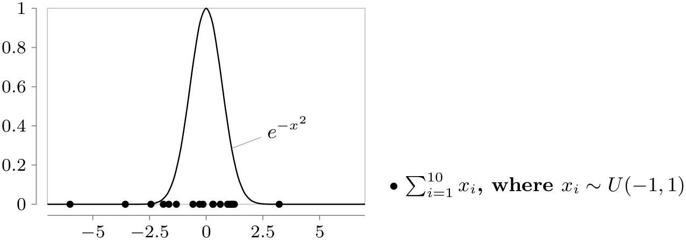

The TikZ and PGF Packages
Manual for version 3.1.9a
Part VI Data Visualization
by Till Tantau

\usetikzlibrary {datavisualization.formats.functions}
\tikz \datavisualization [scientific axes=clean]
[
visualize as smooth line=Gaussian,
Gaussian={pin
in
data={text={$e^{-x^2}$},when=x is 1}}
]
data
[format=function] {
var
x
:
interval
[-7:7] samples
51;
func
y
=
exp(-\value x*\value x);
}
[
visualize as scatter,
legend={south east outside},
scatter={
style={mark=*,mark
size=1.4pt},
label
in legend={text={
$\sum_{i=1}^{10} x_i$, where $x_i
\sim U(-1,1) $}}}
]
data
[format=function] {
var
i
:
interval
[0:1] samples
20;
func
y
=
0;
func
x
=
(rand + rand + rand + rand + rand +
rand + rand + rand + rand + rand);
};